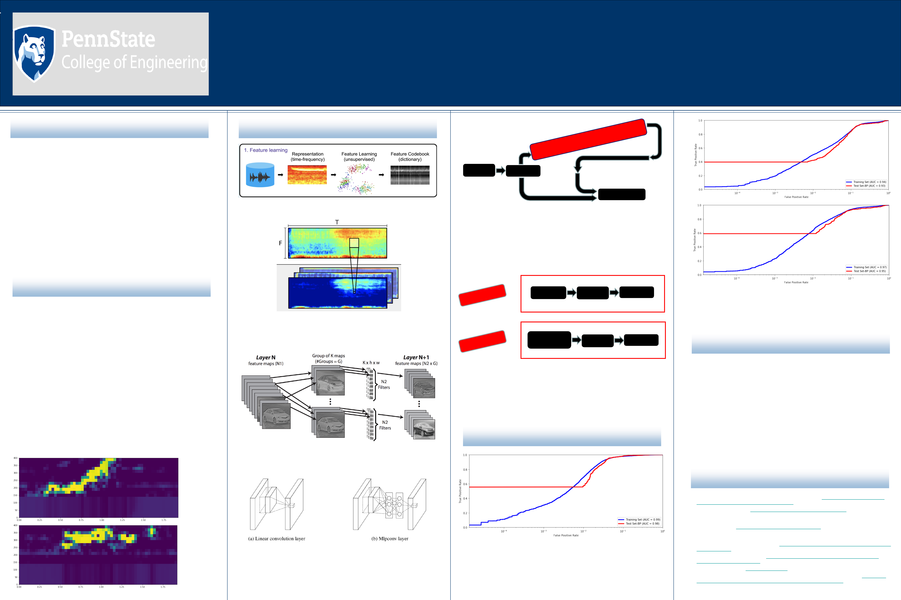

Supervised vs Unsupervised Feature Learning for Right
Whale Upcall Detection in Convolutional Neural Networks
Christopher Chin
Graduate Program in Acoustics, Pennsylvania State University, University Park, PA
INTRODUCTION:
Despitebeingoneofthemostsuccessfulmachinelearning
techniquesthusfarforspectrogramfeatureextraction,supervised
CNNsrelyonlabeleddatathatistypicallyscarce,aswellastime
andresource-intensivetoproduce.
5
Unsupervisedfeaturelearning
viaK-Meansclusteringhasconsequentlybeenproposedasa
viablealternative,enablingabstractfeaturestobelearnedfrom
readilyavailableunlabeleddata.
5
However,thealgorithmoften
facesthebottleneckofinputdimensionality-ahighfeature
dimensionalityandinsufficientnumberofsampleswillresultinan
increasedlikelihoodofemptyclustersandunrepresentative
centroids.
2
Therefore,thetwoCNNsinthisstudycontainedtwo
layersofconvolutionalfilterslearnedbyK-Means,withthe
featuredimensionalityfromthefirstlayerreducedbyeither
creatingsmallergroupsofenergy-correlatedfeaturemaps,or
feature–poolingvia1x1convolutions.Theperformanceofboth
modelswasthencomparedusingROCcurvesandtheAUCscore.
ABSTRACT:
Convolutionalneuralnetworks(CNNs)haveachievedstate-of
-the-artresultsinbioacousticdetectionandclassificationproblems,
greatlyassistingeffortstowardconservationandbiodiversity
determination.Inthisstudy,theperformanceoftwoCNNswas
comparedonthetaskofdifferentiatingrightwhaleupcallsfrom
ambientnoisewiththeK-Meansalgorithmusedinbothcasesto
learnadictionaryoffiltersunsupervised.Concretely,thetwoCNNs
differedintheirmethodsofreceptivefieldreductioninthesecond
convolutionallayer,ameansofboostingclassifierperformanceby
learningmorediscriminativefilters.Relativetotheperformanceof
abaselinesupervisedCNNtrainedonthesamedataset,thesetwo
unsupervisedmodelsattainedcompetitiveAUC(AreaUnderROC
Curve)scores,demonstratingtheefficacyandpotentialofan
unsupervisedapproachforfuturebioacousticmonitoringsystems.
METHODS:
Figure 4
4
.Grouping.Theoutputofthefirstlayerisseparatedintosmaller
groupsconsistingoffeaturemapsmoststronglycorrelatedtogether,andthose
groupsofreduceddimensionalityaregiventoK-Means.
3
RESULTS:
CONCLUSIONS:
1. CakirE.,ParascandaloG.,HeittolaT.,HuttunenH.,VirtanenT.ConvolutionalRecurrentNeural
NetworksforPolyphonicSoundEventDetection.arXiv preprint arXiv:1702.06286,2017
2. CoatesA.,NgA.Y.(2012)LearningFeatureRepresentationswithK-Means.In:MontavonG.,Orr
G.B.,MüllerKR.(eds)NeuralNetworks:TricksoftheTrade.LectureNotesinComputerScience,
vol7700.Springer,Berlin,Heidelberg
3. CoatesA.,NgA.Y.Selectingreceptivefieldsindeepnetworks.In:Shawe-Taylor,J.,Zemel,R.,
Bartlett,P.,Pereira,F.,Weinberger,K.(eds.)AdvancesinNeuralInformationProcessingSystems
24,pp.2528–2536.CurranAssociates,Inc.(2011)
4. CulurcielloE.,JinJ.,Dundar,A.,BatesJ.AnAnalysisoftheConnectionsBetweenLayersofDeep
NeuralNetworks.arXiv preprint arXiv:1306.0152,2013
5. KnyazevB.,BarthE.,MartinetzT.RecursiveAutoconvolutionforUnsupervisedLearningof
ConvolutionalNeuralNetworks.arXiv preprint arXiv:1606.00611,2017
6. LinM.,ChenQ.,YanS.NetworkInNetwork.arXiv preprint arXiv:1312.4400,2014
7. SalamonJ.,BelloJ.P.,FarnsworthA.,RobbinsM.,KeenS.,KlinckH.,etal.(2016)Towardsthe
AutomaticClassificationofAvianFlightCallsforBioacousticMonitoring.PLoSONE11(11):
e0166866.doi:10.1371/journal.pone.0166866
Figure 6. General Unsupervised CNN Architecture. Tofacilitate
comparison,bothCNNshaveanidenticalfirstlayer(LearningandEncoding
blocks),wheretherawspectrogramsareconvertedintofeaturevectors.They
alsohaveanidenticalClassificationblock:twofullyconnectedlayers.Itisin
thesecondlayer(Redblock)thatthearchitecturesdiffer,anditisthis
differencethatimpactsmodelperformance.(Notethatfeaturevectorsfromboth
thefirstlayerandsecondlayerareconcatenatedandpassedintothe
Classificationblock).
Figure 5
6
.1x1 Convolution. Insteadofastandardlinearconvolutionlayeras
implementedintheFeatureEncodingstep,a1x1convolutional(Mlpconv)
layerachievesanonlinearseparationbetweenlatentfeaturesby,ineffect,
slidingamultilayerperceptronacrosstheimage.
6
Theinputdimensionalityis
reducedtothenumberof1x1filtersimplemented.
6
REFERENCES:
Inthisstudy,twounsupervisedCNNarchitectureswereproposedto
addressabioacousticimageclassificationtask.Althoughthebaseline
supervisedmodelultimatelydemonstratedsuperiorperformance,
UnsupervisedModel2wasdeemedtobeanexcellentalternativegivena
limitedamountoflabeleddata.Itiscapableofnotonlylearning
discriminativefilterswithoutbackpropagation,butalsoachievinghigh
performancemetricswithoutthecomplexgroupingarchitectureandlong
computationtimeofUnsupervisedModel1.Theresultsobservedinthis
studythereforestronglyencouragefurtherinvestigationintounsupervised
featurelearning–otherdimensionalityreductiontechniques,deeper
architectures,andstackinganadditionalRNNlayertolearnlonger-range
dependenciesareallexcitingdirectionsforfutureresearch.
1
Figure 1.
Representative
spectrograms
(after pre-
processing)
with upcall
present (A),
and upcall
absent (B).
CNNsmust
learnto
distinguish
betweenthese
characteristic,
high-intensity
regions.
A
B
Learning
Encoding
Classification
…
Figure 2
7
. Feature Learning.K-Meanstakesrandompatchesfromtheinput
spectrogramsandclustersthemintorepresentativecentroids/filters.
.2
Figure 3
1
. Feature Encoding.Anonlinearactivationfunctionisappliedto
theelementwiseproductofeachfilterinthedictionaryandeachpatchinthe
inputimage,
2
therebyencodingtheimageintoafeaturevectorusedfor
classification.
7
Grouping
=
Learning
Encoding
1x1
Convolution
…
=
Learning
Encoding
…
Figure 7.Second Layer Detail of Unsupervised Model 1 (A), and of
Unsupervised Model 2 (B). Theoutputofthefirstlayerisreducedin
dimensionalityviaeitherGrouping(A)or1x1Convolutions(B).Random
patchesfromtheoutputarethengiventoK-Meanstolearnanewdictionaryof
filterscapableofevenmorefinelydiscriminatingfeaturesfromtheoriginal
spectrograms(LearningBlock).
3
Thesefiltersaresubsequentlyusedinthe
EncodingBlocktoyieldafeaturevectorfortheClassificationblock.
7
A
B
Figure 8.Supervised Model: Training Set ROC Curve vs Test Set ROC
Curve.TheROCCurvedemonstratesamodel’sprobabilityofdetectionvs
probabilityoffalsealarmwithvaryingvaluesofthreshold-theAUCscoreis
thecorrespondingonenumberperformancemetric.
7
Thebaselinesupervised
CNNachievedanAUCscoreof98.50%onthetrainingsetand98.29%onthe
testset,demonstratingitsabilitytogeneralizeonunseendata.
Figure 9.Training Set ROC Curve vs Test Set ROC Curve for Unsupervised
Model 1 (A) and Unsupervised Model 2 (B).UnsupervisedModel1achievedan
AUCscoreof94.14&onthetrainingsetand93.13%onthetestset,while
UnsupervisedModel2achievedanAUCscoreof96.07%onthetrainingsetand
95.97%onthetestset.
A
B